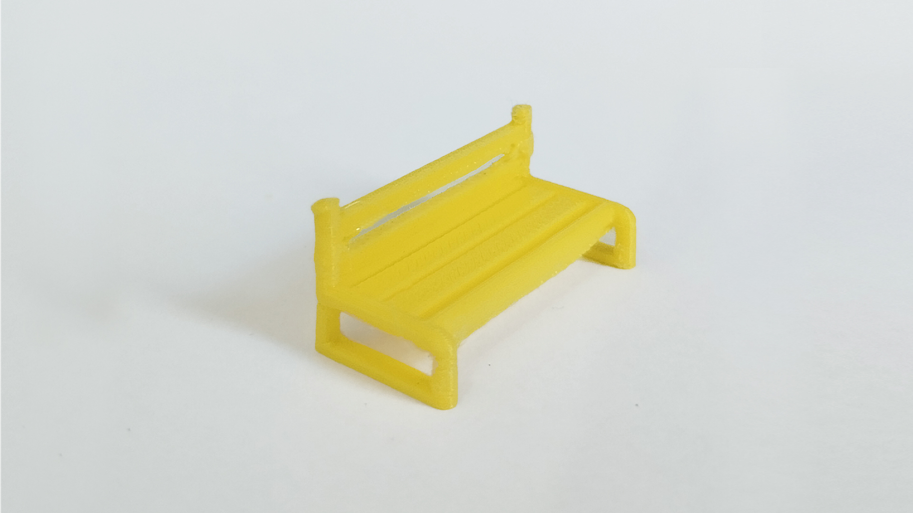

Banco
Download
O módulo Banco tem como função avaliar o comportamento de pontes, permitindo o ajuste combinado dos parâmetros de resfriamento, velocidade de impressão e temperaturas de mesa e extrusão.
Sua geometria foi projetada para evidenciar falhas como queda do filamento, irregularidade nas linhas e excesso de material, auxiliando na identificação de configurações que resultem em pontes mais estáveis e bem definidas.
O tempo de impressão estimado (podendo variar de acordo com suas configurações de impressão) é de cerca de 10 minutos.
